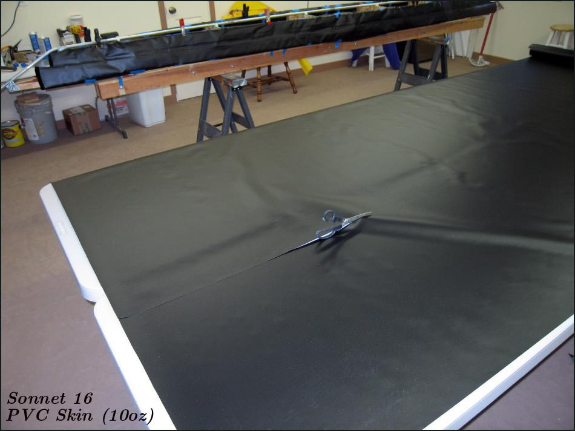

| Sonnet 16 | Menu Previous Page Next Page |
|

The Sonnet 16 skin and sleeves are made from 10oz Coverene PVC, though 18oz hull and 10 oz deck are now recommended for greater durability. Six linear yards ( 61" X 36" ) are enough to skin both the hull and deck if using a single weight for hull and deck. Six linear yards of each weight is required if using 10oz deck / 18oz hull. An additional 5 yards are required for the sponson sleeves. ( Sleeves are 15' X 23" each). Two quarts of HH-66 Vinyl cement are required for gluing both the sleeves and skin. No sewing is required.
Note: For greater durabilty, an 18oz hull / 10oz deck are recommended. |
|